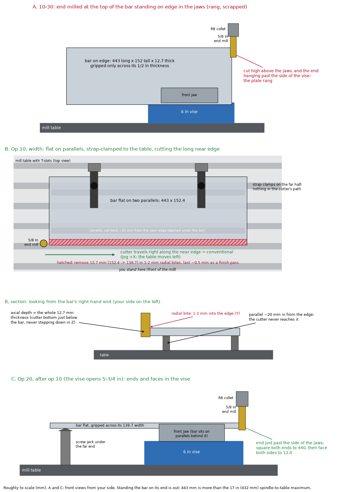

For a beginner on the PM-30MV mill with a DRO. Read the whole sheet once before you touch the machine.
Part
ch-rocker-arm-tl-oblique-base-bar (shop fixture for the rocker-arm jig)
Drawing no.
MHA-CH-06-TL-20, main d939630173 (after v47; prints as v48 at the next release)
Make
2 bars, both identical
Material
6061-T6511 aluminium flat bar, 1/2 × 6 in (12.70 × 152.4 mm), the owned OnlineMetals 1173 bar
Finished size
17.32 × 5.50 × .47 in = 439.93 × 139.70 × 11.94 mm, each ±.01 in (±0.25 mm)
Finish
Ra 125 µin (3.2 µm) on both big faces (table and rail seats). Everything else as machined. Edges broken.
Machines
Saw, PM-30MV mill with DRO, 6 in vise, strap clamps
Units
The print is in inch; the rail and bracket stations print in mm. Run the DRO in mm: every DRO number on this sheet is mm, with the print value beside it.
What changed since the 2026-10-30 traveler
The drawing changed (PR #2187 for issue #2177, PR #2086 follow-ups, #290 decimal inch):
Rail: the rail now comes from the Amazon kit (HGR15 rail, MHA-CH-06-TL-VN-83). 8 rail holes at 15.00, 75.00 … 435.00 mm (60 apart, ±0.08), was 7 at 40 … 400. Still #8-32, row still 88.90 (3.50 in) from the zero edge.
Tighter sizes: width 5.50 ±.01 in (139.45–139.95 mm, was ±0.8); thickness .47 (11.94, was 12.0); length 17.32 (439.93).
Small moves: near slot X .87 (22.10, was 20.9); bracket rows .245 / .902 / 1.768 / 2.425 in (6.22 / 22.91 / 44.91 / 61.60 mm).
The process changed, from the advice in the 2026-10-30 logbook entry (revised 2026-11-01; not yet tried at the machine). On 10-30 the bar rang standing on edge in the vise and was scrapped.
Op 20, width: bar flat on the table on crosswise parallels, screw jack, straps and stops. Mill only the near edge, side of the cutter, full depth. It is no longer cut standing on edge.
Op 30, ends and faces: in the vise, bar flat on 1-3/8 in parallels, jack under the far end. It is no longer faced with the vise off.
New shop rules on page 2: measure first, cut to coordinates, escape drill, climb vs conventional, collet grip, power feed.
BEFORE YOU START
Safety glasses on. No gloves, rings or loose sleeves near the spindle. Aluminium chips are razor sharp. Clear them with a brush, never your hand, and only with the spindle stopped.
Escape drill, practise it dry first: if it rings or grabs, press the pendant stop and wait until all motion has stopped, then retract Z. Never back off sideways while the cutter is in the cut: on 10-30 that drove it deeper.
Measure before every op and write the allowance on this sheet (target − actual). Cut to an absolute DRO number, never by counting increments.
Check your rail first. Lay the kit rail on a flat surface. Measure each hole from the end you'll fit flush: 15.00, 75.00, 135.00, 195.00, 255.00, 315.00, 375.00, 435.00 mm, each within ±0.08. If any hole is outside that, stop and report; don't drill the bar to the rail.
The edge you mill in Op 20 is the ZERO EDGE. All the Y numbers on this sheet are measured from it. Mark it as soon as it's cut.
In Setup A, the face you see on top becomes the bottom of bar 1. The counterbores go in that face. This is on purpose, so all the holes are made in one setup.
Drill only over open air. Every hole is clear of the parallels, but look before every hole anyway.
The eight rail holes are the tight feature (±0.08 mm). Stop exactly on the DRO number for each one.
What you need
Tool
Used for
Holder / status
Saw (the miter saw you used on 10-29, or a bandsaw), tape measure, file
cut two new blanks 443 mm long (the 10-30 piece is scrapped)
—
1 in parallels (1/8 × 6 in, matched pair)
Op 20: crosswise under the bar
owned
HHIP 3901-0076 screw jack (23–30 mm)
Op 20: under the middle of the bar
not in hand (in the cart 11-01)
HHIP 3900-2125 universal work stop
Op 20: end stop at the right-hand end
not in hand (in the cart 11-01). Check the 1/2 in base hole takes a 1/2-13 stud.
Two 1-2-3 blocks
Op 20: far-edge stops, stood 2 in tall
confirm you have a pair (Taytools pair on order)
1-3/8 in (34.9 mm) parallels, matched pair
Op 30 and Setup A: lift the bar above the jaw tops
For the final check: the kit rail with 8 #8-32 × 3/4 socket screws; one #8-32 × 5/8 socket screw; a 1/2-13 T-slot stud
fit tests
—
Speeds (LittleMachineShop chart, row "Wrought aluminum 6061-T6"; PM-30MV tops out at 3000 rpm)
Tool
Chart speed
Set spindle to
Feed
3/4 in end mill (facing)
165 ft/min milling
840 rpm
85 mm/min roughing, 60 mm/min for the last pass. My choice, not from the chart.
1/2 in end mill
165 ft/min milling
1250 rpm
Side cuts (Op 20 edge, Op 30 ends, A4): 150 mm/min (0.06 mm per tooth), up to 200 if the chips are still dust. 75 mm/min (0.03 per tooth) made near-dust chips on the Op 20 edge: the flutes rubbed. Slots (A11): 75 mm/min. On 10-30 full-width cuts chattered at 1500 rpm and were acceptable at 1000–1200 (with the 5/8 in 4-flute). If it chatters, stiffen the setup first, then drop the speed.
5/16 in end mill (counterbores)
165 ft/min milling
2000 rpm
plunge slowly with the quill, like drilling
#2 centre drill, #29 drill, #9 drill
350–400 ft/min drilling (works out above 3000 rpm)
3000 rpm
steady hand feed; peck every 3 mm
3/8 in drill
350–400 ft/min drilling
2000 rpm
slower than the chart, so a big drill stays easy to control; peck every 3 mm
Edge finder
750–1500 rpm (Travers)
1000 rpm
approach very slowly near the edge
8-32 tap
by hand only. Spindle power OFF.
Source: https://littlemachineshop.com/pages/cutting-speeds. Brush cutting oil on before every cut.
Shop rules for this part (logbook advice, 2026-10-30 entry; not yet tried)
Topic
What to do
Axes
Every axis is the cutter moving relative to the part. Jog +X: the cutter moves right (the table moves left). Jog +Y: the cutter moves away from you (the table moves toward you). Jog +Z: the cutter moves up, away from the part. This sheet uses the same signs, so Y numbers toward you are negative.
Climb or conventional
Spindle running forward: picture the cutter's travel along the part. Part on your left = conventional (use this); part on your right = climb. Op 20 near edge: the cutter travels right (jog +X). Left-hand end: the cutter travels toward you (jog −Y). Right-hand end: the cutter travels away (jog +Y).
Plan on paper
Measure the stock first. Write actual − target = allowance, split it into rough passes plus one finish pass, and tape the sheet to the machine. On 10-30, one 0.150 in pass was more than the whole 3 mm length allowance.
Collet grip
Wipe oil and Tap Magic off the collet and the shank. Tighten the drawbar properly. Mark the shank at the collet face with the marker, so you can see if it creeps (on 10-30 the cutter pulled 1/4 in out). Keep stick-out short.
Power feed without overrun
Don't use fast step jogs for long passes: they queue up and keep moving after you stop. Use an incremental MDI move in CNCjs, e.g. G21 G91 G1 X470 F150, then G90 (and G20 if you were in inch mode). G21 makes it mm at mm/min whatever mode was active. Unverified against your config.
Laptop
Set screen and sleep timers to Never while plugged in, and turn off USB selective suspend, so the pendant doesn't drop out. Unverified.
Edge finder zero (EL400)
When the tip kicks, don't move that axis. Use Axis Set (EL400 manual §7.4) to enter the spindle's position from the edge: ±2.54 mm, the sign from which side you came. Never use Preset (§8.1) to zero; it's for distance-to-go. Back off, touch again, and check the reading repeats.
DRO direction
The DRO must count the same way as the jog: jog +X → X counts up; jog +Y → Y counts up and the cutter moves away. If an axis counts the wrong way, fix it with Direction (EL400 manual §6.2). Don't flip the numbers on the sheet.

Figure from the 2026-10-30 logbook entry. Its panel B is this sheet's Op 20 and panel C is Op 30. The figure says "face to 12.0"; the print is now .47 in = 11.94 mm.
Op 10: Cut the blanks (saw)
Cut two new pieces 443 mm long from the 1/2 × 6 bar. The 10-30 piece is scrapped. Keep it for another oblique-jig part if it measures up, but don't use it here.
Let the Dykem dry before you scribe the line. Support the long end of the bar so it doesn't drop as the cut finishes.
File off the saw burrs. Measure each piece: length , width at both ends and the middle , thickness .
Don't start Op 20 until you have
the HHIP 3901-0076 screw jack the HHIP 3900-2125 work stop, and its base takes a 1/2-13 stud two 1-2-3 blocks the escape drill practised dry
Op 20: Mill the near edge to 5.50 in (139.70 mm) wide (on the table, vise off)
The bar lies flat on crosswise parallels, so the cut is low and stiff, not high above the jaws. You mill only the near long edge, with the side of the cutter at full depth. The far edge stays as extruded and sits against the stops.
Take the vise off. Wipe the table and stone off any burrs. Check the real X travel: a pass needs about 470 mm (the 443 bar plus the cutter plus run-on at each end).
Parallels: stand the two 1 in parallels crosswise, one 30–40 mm in from each end of where the bar will sit. Their near ends sit 20 mm back from the bar's near edge, so the cutter never reaches them; they stick out about 20 mm past the far edge.
Jack: put the 3901-0076 under the middle, on solid table, not across a T-slot. Leave it low for now.
Lay the bar on the parallels. Straps snug on the far half, each strap over a parallel, so nothing is in the cutter's path.
Indicate the far edge along X. The width band is only ±0.25 mm, and the new edge comes out straight along X, so any skew turns into taper. Tap the bar until the far edge reads within 0.05 mm end to end. (The 0.05 is this sheet's choice, from the print band.)
Stops: clamp both 1-2-3 blocks, stood 2 in tall, against the far edge beside the parallels. At the right-hand end, set the work stop with its rod on the back half of the end face, so the cutter still runs off the end. Put the clamp block all the way down, rod about 27–30 mm up (check it lands on the 25.4–38.1 mm edge), as little rod sticking out as possible, both set screws tight. Clamp each stop to the table on its own; a stop that is only pushed against the bar gets shoved aside.
Jack just touching the bar at 25.4 mm: run it up by hand, never lifting the bar. Then straps tight. Only the straps hold the bar against the pull toward the cutter; nothing can stop it on the near side.
Dry run: spindle off, run the whole pass in the air. Check the collet clears the straps and the work stop's column.
Measured width: (ends and middle). Allowance = that − 139.70 = , about 12.7.
Cutter: 1/2 in 2-flute, 1250 rpm. Bottom 1–2 mm below the bar's underside (below 25.4 mm); never step down in Z. Lock the head.
Clean-up pass: bring the cutter in from the front until it just cuts, 0.5–1 mm, and run the whole length with the cutter travelling right (+X, conventional). After this first pass, check the bar hasn't crept toward the cutter.
Set Y from the cut: without moving Y, measure the width W at both ends and the middle. Axis Set Y = −(W − 139.70). Now Y 0.000 is the finished edge.
Roughing: step in toward Y 0, one full-length pass each, always travelling +X. Start at a 2 mm radial bite at 150 mm/min. If it stays quiet and the bar hasn't crept, go to 3 mm (about a quarter of the cutter). Don't go past 3 mm in this setup: only the straps hold the bar against the pull toward the cutter. A 1 mm bite at full depth makes chips too thin and rubs. To go back: move −Y 1 mm (out of the cut), return in X, then step in. Always approach the new Y moving +Y, so backlash is taken the same way every time.
Finish: the last ~0.5 mm in one pass at Y 0.000. Width 139.70; anything from 139.45 to 139.95 is OK, at both ends and the middle.
Write ZERO EDGE on both faces next to the milled edge. Do both bars before you go on.
Don't start Op 30 until you have
a matched pair of 1-3/8 in (34.9 mm) parallels the HHIP 3901-0079 screw jack (100–140 mm)
Op 30: Square the ends, face both big faces to .47 in (11.94 mm) (vise)
At 139.70 wide the bar now fits the 5¾ in vise lying flat. On 1-3/8 in parallels its top stands above the jaws: jaw tops about 118.2 mm above the table (73.3 vise bed with the swivel base off, plus 44.9 jaws), bar underside about 108.2, so the cutter stays about 2 mm above the jaws on the last facing pass and the jaws still grip about 10 mm. With the swivel base fitted, every height goes up by its thickness.
Put the vise back, swivel base off. Before you bolt it down, check Y reach: the edge finder must reach 10 mm behind the fixed jaw and 140 mm in front of it (on 10-30 the table ran out 5 mm short of the back corner). Move the vise until it does. Then indicate the fixed jaw: under 0.02 mm along X, as on 10-29.
Wipe the vise floor, the jaws and the parallels. Bar flat, ZERO EDGE against the fixed jaw, on the 1-3/8 in parallels. Tighten, tap down with the dead-blow hammer, tighten again.
Ends (1/2 in end mill, 1250 rpm): slide the bar so one end is just past the side of the jaws. Put the 3901-0079 jack under the far end and run it up to touch at about 108 mm. Cutter bottom 1 mm below the bar, clear of the parallels. Take 0.5 mm per pass until the end is clean: left-hand end, cutter travels toward you (−Y); right-hand end, cutter travels away (+Y). Do the other end the same way. Leave the length 0.5–1.0 mm over 439.93 (440.4–440.9 on a steel rule): A4 finishes it on the DRO.
Measure the thickness at the four corners and the middle: . Allowance = that − 11.94 = , about 0.38 per side.
Face side 1 (3/4 in end mill, 840 rpm): slide the bar so one half is over and beside the jaws, jack under the far end. Touch the top with a cigarette paper and Axis Set Z = the measured thickness (so Z 0 is the underside). Lock the head. Rough at Z = thickness − 0.25: passes along X, cutter travelling +X, stepping +Y 15 mm from the near side toward the back (uncut metal on your left: conventional). Lift Z 1 mm to return. Then slide the bar for the other half, touch the faced half with paper to confirm Z, and repeat.
Finish side 1 at Z = measured thickness − allowance ÷ 2, 60 mm/min, both halves. Stop if you see chatter marks.
Flip the bar, faced side down. Wipe the parallels and the faced side; one chip ruins the seat. Re-measure, touch off, Axis Set Z, and face side 2 in two halves the same way, finishing at Z = 11.94. Anything from 11.68 to 12.19 is OK.
Ra 125 µin check (there's no roughness gauge in the shop): both faces should show an even swirl, with no chatter or tearing, and a fingernail should slide across without catching.
Do both bars.
Op 40: Mark the bar
The ZERO EDGE is already marked.
Pick one end to be the ZERO END and write "ZERO END" there.
On one big face, write "C'BORE SIDE — UP IN VISE". This face goes up in Setup A. Both faces are the same, so it doesn't matter which one you pick.
Setup A: Mill vise. The length, all the holes and the slots are cut here, in one setup.
This is what you should see from where you stand, looking down at the vise. The zero corner is back-left. X counts up to the right from the zero end. Y is 0 at the zero edge (back) and goes negative toward you, the same way the jog goes. Every number is a DRO reading from that corner, in mm.
Why it looks like a mirror image of the drawing: the drawing shows the other face. Through holes look the same from either side, and the counterbores really are on the face you're looking at ("C'BORE FAR SIDE" on the drawing).
Setup A operations (do them in this order for each bar)
A1. Load the bar
Wipe the vise floor, the jaws and both 1-3/8 in parallels. Put one parallel against each jaw. Taller parallels than the old 1 in ones keep the setup the same as Op 30 and put the underside where the 3901-0079 jack reaches it.
Lay the bar on the parallels, marked face up, ZERO EDGE against the fixed (back) jaw, ZERO END on your left.
Slide it sideways until about the same amount, roughly 144 mm, sticks out each side.
Tighten the vise. Tap the bar down with the dead-blow hammer, then tighten again. If you can slide either parallel with your fingers, tap again until you can't.
A2. Check which way your DRO counts
Jog +X: the spindle moves right over the bar, and X must count up. Jog +Y: the spindle moves away from you, and Y must count up.
If either one disagrees, fix it with Direction (EL400 manual §6.2). Every number below assumes the DRO and the jog agree.
A3. Set zero (edge finder, 1000 rpm)
X zero: come at the left end face from the left, at about Y −70. When the tip kicks, Axis Set X = −2.54 (EL400 §7.4).
Y zero: raise it, move to about X 100 (out in the overhang, clear of the fixed jaw), and come at the zero edge from behind it. When it kicks, Axis Set Y = +2.54.
Check: back off, touch both again, and the readings must repeat. Then go to X 0.000, Y 0.000: the tip should sit right over the back-left corner.
A4. Finish the length (1/2 in end mill, 1250 rpm)
Run the 3901-0079 jack up under the right-hand end until it just touches; don't lift the bar.
Measure the end mill across its cutting edges with calipers and call it D, normally 12.70. Your last pass is at X = 439.93 + D/2: X 446.28 for D = 12.70.
Cutter bottom 1 mm below the bar. Take 0.25 mm passes across the right end, cutter travelling away from you (+Y, conventional). Length 17.32 in (439.93 mm); anything from 439.67 to 440.18 is OK.
A5 to A8. Spot and drill every hole (drill chuck)
Move to each X and Y below and stop exactly on the number. Brush on oil, peck every 3 mm, and stop about 3 mm past breakthrough.
Step
Tool, speed
Holes
Depth
A5
#2 centre drill, 3000 rpm
all 18 positions below
until the cone is about 3 mm across
A6
#29 drill, 3000 rpm
8 rail holes
through
A7
#9 drill, 3000 rpm
8 bracket holes
through
A8
3/8 in drill, 2000 rpm
2 slot starter holes
through
Rail holes (8)
X
Y
✓
Bracket holes (8)
X
Y
print (in, from zero edge)
✓
R1
15.00
−88.90
B1
57.00
−6.22
.245
R2
75.00
−88.90
B2
57.00
−22.91
.902
R3
135.00
−88.90
B3
57.00
−44.91
1.768
R4
195.00
−88.90
B4
57.00
−61.60
2.425
R5
255.00
−88.90
B5
428.00
−6.22
.245
R6
315.00
−88.90
B6
428.00
−22.91
.902
R7
375.00
−88.90
B7
428.00
−44.91
1.768
R8
435.00
−88.90
B8
428.00
−61.60
2.425
Slot starter holes (2)
X
Y
✓
S1 (left slot, middle)
22.10
−51.31
R4 and R5 are the only holes between the jaws, and they sit over the open gap between the parallels. Everything else is out in the overhang. Rail stations print in mm (±0.08); bracket X in mm (±0.13); bracket rows in inch (±.005).
S2 (right slot, middle)
389.89
−126.49
A9. Tap the 8 rail holes 8-32 (by hand, spindle power OFF)
Switch the mill off at the switch. Put the tap in the drill chuck, go to R1, and add a drop of tapping fluid.
Lower the quill onto the tap. Keep light pressure on the quill handle and turn the chuck clockwise by hand about 3 turns so the thread starts straight.
Finish with the T-handle wrench: one turn in, half a turn back, all the way through. If it gets stiff, back out a full turn and add fluid.
Repeat for R2 to R8.
A10. Counterbore the 8 bracket holes (5/16 in end mill, 2000 rpm)
Touch off the top of the bar at B1 with a cigarette paper and zero the quill depth.
Set the quill stop for .189 in (4.80 mm) deep (4.67 to 4.93 is OK).
At each of B1 to B8, plunge slowly to the stop with oil, then come straight up.
After B1: a #8 socket screw's head must sit below the surface. A steel rule laid across it mustn't rock.
A11. Mill the 2 slots (1/2 in end mill, 1250 rpm)
Each slot is .53 in (13.46 mm) wide, with its two round ends .16 in (4.06 mm) apart. It takes a 1/2 in hold-down stud.
Slot
Centre X (print)
End centres Y (print: rise from zero edge)
Finishing lap X (D = 12.70)
Finishing lap Y
Left
22.10 (.87)
−49.28 → −53.34 (1.94)
21.72 and 22.48
−48.90 and −53.72
Right
389.89 (15.35)
−124.46 → −128.52 (4.90)
389.51 and 390.27
−124.08 and −128.90
Roughing: start over the starter hole. Go 3 mm deep and move Y from one end centre to the other and back. Repeat at 6, 9 and 12.4 mm, which is 0.5 below the bottom of the 11.94 bar.
Finishing lap at full depth: go round the rectangle in the table clockwise as seen from above (conventional inside a pocket).
If D isn't 12.70, move the lap out by (13.46 − D) ÷ 2 on each side.
Check the width with calipers: 13.21 to 13.72. The far slot leaves a 4.45 wall to the as-extruded edge (toward you), so don't open it up more than you have to.
A12. Unload
Come at the right end from the right with the edge finder. It should read 442.47, which is 439.93 + 2.54 (anything from 442.21 to 442.72 is OK). Lower the jack, brush off the chips and take the bar out.
Op 50: Deburr (bench)
Run the deburring tool lightly round every edge: one or two passes. Don't scratch the faced seats.
Run an 8-32 screw through each rail hole.
Op 60: Check the part
Write down what you measure. If a reading is outside the OK range, don't use the bar until someone has looked at it.
What
Drawing
OK range (mm)
How to check
Bar 1
Bar 2
Length
17.32 in (439.93)
439.67 – 440.18
DRO in A12
Width
5.50 in (139.70)
139.45 – 139.95
calipers at both ends and the middle
Thickness
.47 in (11.94)
11.68 – 12.19
micrometer at the 4 corners and the middle
Seat finish, both faces
Ra 125 µin
even swirl, no chatter
look, and drag a fingernail across: it shouldn't catch
Sits flat
table seat
no rock
on the mill table: press each corner, it mustn't rock
Rail row from the zero edge
3.50 in (88.90)
88.65 – 89.15
calipers from the edge to the near side of a hole, plus 1.73
Rail threads
#8-32 UNC, 8×
screw runs in by hand
an 8-32 screw turns in all the way with your fingers
Rail fit (the real test)
MATCHES HGR15 RAIL MHA-CH-06-TL-VN-83
all 8 screws start by hand
Lay the kit rail on the un-marked face, the end you measured flush with the zero end. All 8 screws go in by hand without pushing the rail sideways.
Bracket hole size
Ø.196 in (4.98)
#8 screw drops through
a #8 screw drops through freely
Bracket hole positions
X 57.00 / 428.00 mm; rows .245 / .902 / 1.768 / 2.425 in
X ±0.13; rows ±0.13
calipers to the hole side, plus 2.49
Counterbore
Ø.313 × .189 deep
Ø7.82 – 8.08; 4.67 – 4.93 deep
calipers; a #8 head sits below the surface
Slot width
.53 in (13.46)
13.21 – 13.72
calipers
Slot end-centre spacing
.16 in (4.06)
3.81 – 4.32
slot length minus slot width (about 17.52 − 13.46)
Slot positions
X .87 / 15.35 in; rise 1.94 / 4.90 in to the lower end centre
± 0.25
calipers or rule
Far slot wall
4.45
at least 2.03 (.080)
calipers from the far slot to the as-extruded edge
Stud fit
1/2-13 stud
slides end to end
push a 1/2-13 stud along each slot
Edges
broken
no sharp edges, no big chamfers
finger (carefully) and eye
Then make the second bar exactly the same way. Don't mirror it. When the jig goes together, bar 2 is simply turned over.
Made by
Date
Time taken
Problems / notes
Hand-written traveler, 2026-11-05. It replaces the 2026-10-30 sheet. Sources: drawing MHA-CH-06-TL-20 and its spec cad/scripts/ch_rocker_arm_tl_oblique_base_bar_spec.py at main d939630173 (rail from the Amazon kit, PR #2187 for issue #2177; decimal inch, #290; milled width, #2083); bracket stations from ch_rocker_arm_tl_vn_oblique_leadscrew_spec.py. Millimetre values are the printed inch values × 25.4. The process for Op 20 and Op 30 and the shop rules come from the advice in logbook/entries/2026-10-30-pendant-and-roughing-base-bar-to-length.md (revised 2026-11-01), which has not been tried at the machine. Tool ownership comes from cad/process/shop/inventory.toml: the jacks and the work stop are in the cart, not in hand, and the 1-3/8 in parallels and the 3901-0079 jack aren't listed. These are my choices, not values from the print or the advice: the 0.05 mm far-edge indication, finishing the length in A4 rather than Op 30, 1-3/8 in parallels in Setup A, the facing feeds and the Ra check method. The sheet was not generated or checked by prechips.